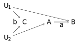

2 简单线性回归
2.1 潜在结果框架
在因果推断中，必须有干预，没有干预就没有因果，这里的干预可以是一项政策、一项措施或者一项活动等. 以二值的干预变量为例，两个值分别对应于积极的行动和被动的行动，分别称为处理 和控制 ，受到对应干预的个体分别称为处理组 （Treatment Group）和控制组 （Control Group）.
注2.1.1 潜在结果框架的三要素是：潜在结果、稳定性假设和随机分配.
对应于每个干预状态，就有一个\textbf{潜在结果}. 设\(D_i=1\) 为积极干预状态，\(D_i=0\) 为控制干预状态，对应的潜在结果分别为\(Y_{1i}\) 和\(Y_{0i}\) ，观测结果为\(Y_i\) ，则有
\[Y_i=Y_{0i}+(Y_{1i}-Y_{0i})D_i=\begin{cases}
Y_{1i}, \mbox{如果}D_i=1\\
Y_{0i}, \mbox{如果}D_i=0
\end{cases}\]
定义2.1.1 定义\(\rho_i=Y_{1i}-Y_{0i}\) 为个体因果效应 . 如果\(\rho_i\) 对所有个体而言相同，则称个体因果效应是同质 的；如果\(\rho_i\) 随\(i\) 的变化而变化，则称个体因果效应是异质 的.
然而，个体的潜在结果只能观测到其中一个，个体因果效应无法直接计算，因此我们关注的是平均因果效应.
定义2.1.2 定义\(\rho=\mathbb{E}[Y_{1i}-Y_{0i}]=\mathbb{E}[Y_{1i}]-\mathbb{E}[Y_{0i}]\) 为平均因果效应 （Average Treatment Effect, ATE）.
相应地，我们可以定义处理组的平均因果效应为\(\rho_T=\mathbb{E}[Y_{1i}-Y_{0i}|D_i=1]\) ，控制组的平均因果效应为\(\rho_C=\mathbb{E}[Y_{1i}-Y_{0i}|D_i=0]\) . 这样，平均因果效应可以用处理组和控制组平均因果效应的线性加权表示：
\[\rho=\mathbb{E}[Y_{1i}-Y_{0i}]=\mathbb{E}[\mathbb{E}[Y_{1i}-Y_{0i}|D_i]]=P\{D_i=1\}\rho_T+(1-P\{D_i=1\})\rho_C\]
我们可利用样本对三种平均因果效应进行估计，然而在实际观测中，处理组样本的潜在结果\(Y_{0i}\) 和控制组样本的潜在结果\(Y_{1i}\) 无法观测，因此处理组和控制组的平均因果效应无法观测，从而总体平均因果效应无法观测. 此时，我们想到以\(Y_i\) 为被解释变量，\(D_i\) 为解释变量，建立简单的虚拟变量回归模型来识别因果效应参数：
\[Y_i=\alpha+\rho_{ols} D_i+e_i\]
可得\(\hat{\rho}_{ols}\) 的值为（本章中将介绍）
\[\hat{\beta}=\frac{\sum_{i=1}^{n}(D_i-\bar{D})(Y_i-\bar{Y})}{\sum_{i=1}^{n}(D_i-\bar{D})^2}\]
处理组和控制组的样本数可进行如下表示：
\[n_T=\sum_{i=1}^{n}D_i,\,n_C=\sum_{i=1}^{n}(1-D_i)\]
则
\[\bar{D}=\frac{1}{n}\sum_{i=1}^{n}D_i=\frac{n_T}{n}\]
现在对\(\hat{\rho}_{ols}\) 表达式的分子和分母进行重新表示，得
\[\sum_{i=1}^{n}(D_i-\bar{D})(Y_i-\bar{Y})=\sum_{i=1}^{n}(D_i-\frac{n_T}{n})Y_i\]
\[\sum_{i=1}^{n}(D_i-\bar{D})^2=\sum_{i=1}^{n}(D_i^2-2\frac{n_TD_i}{n}+\frac{n_T^2}{n^2})=n_T-\frac{n_T^2}{n}=\frac{n_Tn_C}{n}\]
则
\[\begin{align*}
\hat{\rho}_{ols}&=\frac{\sum_{i=1}^{n}(D_i-\frac{n_T}{n})Y_i}{\frac{n_Tn_C}{n}}\\
&=\frac{\sum_{i=1}^n[(n_T+n_C)D_i-n_T]}{n_Tn_C}Y_i\\
&=\frac{\sum_{i=1}^{n}[n_CD_i-n_T(1-D_i)]}{n_Tn_C}Y_i\\
&=\frac{1}{n_T}\sum_{i=1}^{n}D_iY_i-\frac{1}{n_C}\sum_{i=1}^{n}(1-D_i)Y_i\\
&=\bar{Y}_T-\bar{Y}_C
\end{align*}\]
故而在大样本条件下，
\[\rho_{ols}=\mathbb{E}[Y_i|D_i=1]-\mathbb{E}[Y_i|D_i=0]\]
现在，我们得到了对平均因果效应的合理估计方法，上式可由处理组的平均因果效应表示为
\[\rho_{ols}=\mathbb{E}[Y_{1i}|D_i=1]-\mathbb{E}[Y_{0i}|D_i=0]=\rho_T+\mathbb{E}[Y_{0i}|D_i=1]-\mathbb{E}[Y_{0i}|D_i=0]\]
此时，\(\rho_{ols}\) 无法精准反映\(\rho_T\) ，当且仅当施加如下假设时，\(\rho_{ols}\) 才等于\(\rho_T\) ：
\[\mathbb{E}[Y_{0i}|D_i=1]=\mathbb{E}[Y_{0i}|D_i=0]\]
也可由控制组的平均因果效应表示为
\[\rho_{ols}=\mathbb{E}[Y_{1i}|D_i=1]-\mathbb{E}[Y_{0i}|D_i=0]=\rho_C+\mathbb{E}[Y_{1i}|D_i=1]-\mathbb{E}[Y_{1i}|D_i=0]\]
此时，\(\rho_{ols}\) 无法精准反映\(\rho_C\) ，当且仅当施加如下假设时，\(\rho_{ols}\) 才等于\(\rho_C\) ：
\[\mathbb{E}[Y_{1i}|D_i=1]=\mathbb{E}[Y_{1i}|D_i=0]\]
同时可由总体平均因果效应表示为
\[\begin{align*}
\rho_{ols}&=(P\{D_i=1\}+1-P\{D_i=1\})\mathbb{E}[Y_{1i}|D_i=1]-(P\{D_i=1\}+1-P\{D_i=1\})\mathbb{E}[Y_{0i}|D_i=0]\\
&=P\{D_i=1\}(\mathbb{E}[Y_{1i}-Y_{0i}|D_i=1])+(1-P\{D_i=1\})\mathbb{E}[Y_{1i}-Y_{0i}|D_i=0]+\\
&\quad P\{D_i=1\}(\mathbb{E}[Y_{0i}|D_i=1]-\mathbb{E}[Y_{0i}|D_i=0])+(1-P\{D_i=1\})(\mathbb{E}[Y_{1i}|D_i=1]-\mathbb{E}[Y_{1i}|D_i=0])\\
&=\rho+\mathbb{E}[Y_{0i}|D_i=1]-\mathbb{E}[Y_{0i}|D_i=0]+(1-P\{D_i=1\})(\rho_T-\rho_C)
\end{align*}\]
此时我们发现，\(\rho_{ols}\) 无法精准反映\(\rho\) ，当且仅当施加如下假设时，\(\rho_{ols}\) 才等于\(\rho\) ：
\[\mathbb{E}[Y_{0i}|D_i=1]=\mathbb{E}[Y_{0i}|D_i=0],\,\rho_T=\rho_C\]
这里，我们将\(\mathbb{E}[Y_{0i}|D_i=1]-\mathbb{E}[Y_{0i}|D_i=0]\) 和\(\mathbb{E}[Y_{1i}|D_i=1]-\mathbb{E}[Y_{1i}|D_i=0]\) 称为选择偏差 . 当同时施加选择偏差为0和两组因果效应无差异的假设时，\(\rho_{ols}\) 才可精准反映总体平均因果效应.
定理2.1.1 （稳定个体处理值假设，SUTVA）稳定个体处理值假设（简称稳定性假设）有两层含义：
假设1：不同个体的潜在结果之间不会有交互影响；
假设2：处理水平对所有个体都是相同的.
由上面的推导，我们知道如果需要进行因果推断，必须消除选择偏误. 现已知，实现定理2.1.1中的假设即可消除选择偏误，而若要实现其中假设，必须了解样本的分配机制. 随机分配 恰恰可以实现这样的假设：随机的分配个体进入处理组或控制组，使得无论处理组中的个体，还是控制组中的个体，都来自于同一个总体，从而使得个体的潜在结果独立于\(D\) ，即满足于非混杂性：
\[(Y_{1i},Y_{0i}) \perp\!\!\!\!\perp D_i\]
进而均值独立成立：
\[\mathbb{E}[Y_{0i}|D_i=1]=\mathbb{E}[Y_{0i}|D_i=0],\,\mathbb{E}[Y_{1i}|D_i=1]=\mathbb{E}[Y_{1i}|D_i=0]\]
注2.1.2 基于随机分配的因果分析就是随机控制实验 （Randomized Control Trial, RCT），简称随机实验.
现在验证\(\hat{\rho}_{ols}\) 是对\(\rho\) 的无偏估计.
对\(Y=Y_0+(Y_1-Y_0)D\) 两边取条件期望，得
\[\mathbb{E}[Y|D]=\mathbb{E}[Y_0|D]+\mathbb{E}[Y_1-Y_0|D]D=\mathbb{E}[Y_0]+\rho D\]
设\(\mathbb{E}[Y_0]=\alpha\) ，则有
\[\mathbb{E}[Y|D]=\alpha+\rho D\]
从而
\[Y=\alpha+\rho D+e\]
则\(\hat{\rho}_{ols}\) 是对\(\rho\) 的无偏估计.
注意到
\[\mathbb{E}[e|D]=\mathbb{E}[Y-\alpha-\rho D|D]=0\]
因此在随机分配中，零条件均值假设成立.
注2.1.3 控制变量 是进入回归只起辅助作用的变量，关注的解释变量被称为关键变量 .
如果在随机分配中，某些变量的特征会使结果具有较大差异，需要将这些变量作为控制变量 （协变量）引入回归模型中，且需施加条件独立假设 ：
\[(Y_{1i},Y_{0i}) \perp\!\!\!\!\perp D_i|W_i\]
建立的回归模型如下：
\[Y=\alpha+\rho D+W^\mathrm{T}\beta+e\]
此时\(\hat{\rho}_{ols}\) 不再是对\(\rho\) 的无偏估计，而是一致估计（证明略）.
注意到
\[\mathbb{E}[Y|D,W]=\alpha+\rho D+W^\mathrm{T}\beta+\mathbb{E}[e|D,W],\,\mathbb{E}[Y|D]=\alpha+\rho D+W^\mathrm{T}\beta+\mathbb{E}[e|D]\]
则
\[\mathbb{E}[e|D,W]=\mathbb{E}[e|D]\]
上式称为条件均值独立假设 .
引入控制变量时，常依据后门准则 ：所有的后门路径都可被\(Z\) 阻断，当且仅当每条后门路径满足以下任一条件：
（1）包含一个中介路径\(A\rightarrow C\rightarrow B\) ，其中中介变量\(C\in Z\) ；
（2）包含一个共同原因的路径\(A\leftarrow C\rightarrow B\) ，其中混杂因子\(C\in Z\) ；
（3）包含一个共同结果的路径\(A\rightarrow C\leftarrow B\) ，其中对撞因子\(C\in Z\) .
如果同时存在混杂因子和对撞因子，应选择混杂因子，不选择对撞因子；如果\(Z\) 阻断了后门路径\(a\) ，但它作为对撞因子打开了后门路径\(b\) ，即产生样本选择偏差 （如下图所示）时，就需要在路径\(b\) 上寻找其它可以阻断路径的因子.

2.2 线性投影和线性回归
2.2.1 线性投影模型
由定理1.3.6可知，条件期望函数\(m(X)=\mathbb{E}[Y|X]\) 是对\(Y\) 的最优预测函数. 在实际的预测问题中，我们常常无法获知条件期望函数\(m(\cdot)\) 的具体函数形式，\(m(\cdot)\) 未必是线性函数.
对于一个复杂的模型，可以使用投影 将原始模型的一些特征或变量投影到较小的子空间中，同时尽量保留原始模型的关键信息.这种情况下\(Y\) 和\(X\) 之间的线性预测函数可以构造无数种，而线性投影模型 可以从所有线性预测函数中选择最优的预测函数，构建对条件期望函数的近似.
定义2.2.1 记\(\mathscr{P}[Y|X]\) 是对\(\mathbb{E}[Y|X]\) 的近似，对于线性预测函数
\[\mathscr{P}[Y|X]=X^\mathrm{T}\beta,\]
当\(\beta\) 取\(\beta^*=\arg\min\mathbb{E}[(Y-X^\mathrm{T}\beta)^2]\) 时，函数为最优线性预测函数，此时\(\beta^*\) 称为线性投影系数 .
注意，\(\mathscr{P}[Y|X]\) 是关于\(\beta\) 的函数，随\(\beta\) 的变化而变化.因为可构造的线性预测函数有无数种，对应的\(\beta\) 不同，预测效果则不同.
定理2.2.1 假设\(\mathbb{E}[Y^2]\) 和\(\mathbb{E}[\Vert X\Vert^2]\) 均存在，且\(\mathbb{E}[XX^\mathrm{T}]\) 为正定矩阵，则
\[\beta^*=(\mathbb{E}[XX^\mathrm{T}])^{-1}\mathbb{E}[XY].\]
证明：设\(S(\beta)=\mathbb{E}[(Y-X^\mathrm{T}\beta)^2]\) ，则
\[\begin{align*}
S(\beta)&=\mathbb{E}[(Y-X^\mathrm{T}\beta)^\mathrm{T}(Y-X^\mathrm{T}\beta)]\\
&=\mathbb{E}[(Y^\mathrm{T}-\beta^\mathrm{T}X)(Y-X^\mathrm{T}\beta)]\\
&=\mathbb{E}[Y^2]-2\beta^\mathrm{T}\mathbb{E}[XY]+\beta^\mathrm{T}\mathbb{E}[XX^\mathrm{T}]\beta
\end{align*}\]
令
\[\frac{\partial S(\beta)}{\partial\beta}=-2\mathbb{E}[XY]+2\mathbb{E}[XX^\mathrm{T}]\beta=0\]
得到
\[\beta^*=(\mathbb{E}[XX^\mathrm{T}])^{-1}\mathbb{E}[XY].\]
根据定理2.2.1，最优线性预测函数可以进一步表示成
\[\mathscr{P}[Y|X]=X^\mathrm{T}(\mathbb{E}[XX^\mathrm{T}])^{-1}\mathbb{E}[XY].\]
与条件期望误差类似，我们把
\[e=Y-\mathscr{P}[Y|X]=Y-X^\mathrm{T}\beta^*\]
称为线性投影误差 .
定理2.2.2 （线性投影误差的性质）
(1)\(\mathbb{E}[Xe]=0\) ；
(2)若\(X\) 中存在常数，\(\mathbb{E}[e]=0\) .
证明：(1)\(\mathbb{E}[Xe]=\mathbb{E}[XY]-\mathbb{E}[XX^\mathrm{T}]\beta^*=\mathbb{E}[XY]-\mathbb{E}[XX^\mathrm{T}](\mathbb{E}[XX^\mathrm{T}])^{-1}\mathbb{E}[XY]=0.\)
(2)设\(X\) 中存在常数\(X_i=m\) ，则有\(\mathbb{E}[me]=0\) ，即\(\mathbb{E}[e]=0\) .
注2.2.2 \(\mathbb{E}[Xe]=0\) 说明\(X\) 和\(e\) 不相关，但无法说明任意函数\(h(X)\) 与\(e\) 不相关（即\(X\) 和\(e\) 相互独立）.这里，\(e\) 会影响样本\(X\) 的分布，说明\(e\) 是人为控制的变量，不同的\(e\) 会生成\(\beta\) 的不同取值，最终影响模型的预测效果.
根据以上推导，我们可以对线性投影模型作出如下定义：
定义2.2.2 对于因变量\(Y\) 和自变量\(X=(X_1,X_2,\cdots,X_k)^\mathrm{T}\) ，如果\(\mathbb{E}[XX^\mathrm{T}]\) 为正定矩阵，则称方程组
\[\begin{cases}
Y=X^\mathrm{T}\beta+e\\
\mathbb{E}[Xe]=0
\end{cases}\]
为线性投影模型 .其中，线性投影系数\(\beta\) 存在且唯一，其数学表达式为：
\[\beta=(\mathbb{E}[XX^\mathrm{T}])^{-1}\mathbb{E}[XY].\]
注2.2.3 \(\mathbb{E}[Xe]=0\) 和\par\noindent\(\beta=(\mathbb{E}[XX^\mathrm{T}])^{-1}\mathbb{E}[XY]\) 相互等价.
现在，考虑自变量中存在常数项的情况，我们将常数项分离出\(X\) ，模型可调整为
\[\begin{cases}
Y=X^\mathrm{T}\beta+\alpha+e\\
\mathbb{E}[Xe]=0\\
\mathbb{E}[e]=0
\end{cases}\]
对方程组第一个等式两边取期望，得
\[\mathbb{E}[Y]=\mathbb{E}[X^\mathrm{T}\beta]+\mathbb{E}[\alpha]+\mathbb{E}[e]\]
令\(\mu_Y=\mathbb{E}[Y]\) ，\(\mu_X=\mathbb{E}[X]\) ，则有
\[\alpha=\mu_Y-\mu_X^\mathrm{T}\beta\]
代入第一个等式，得
\[Y=X^\mathrm{T}\beta+\mu_Y-\mu_X^\mathrm{T}\beta+e\]
整理得
\[Y-\mu_Y=(X-\mu_X)^\mathrm{T}\beta+e\]
此时
\[\beta=(\mathbb{E}[(X-\mu_X)(X-\mu_X)^\mathrm{T}])^{-1}\mathbb{E}[(X-\mu_X)(Y-\mu_Y)]=(\mathrm{var}(X))^{-1}\mathrm{cov}(X,Y)\]
因此，对于含常数项的线性投影模型，我们可以进行如下数学表示：
\[\begin{cases}
Y=X^\mathrm{T}\beta+\alpha+e\\
\alpha=\mu_Y-\mu_X^\mathrm{T}\beta\\
\beta=(\mathrm{var}(X))^{-1}\mathrm{cov}(X,Y)
\end{cases}\]
2.2.2 线性回归模型
当条件期望函数\(m(X)=\mathbb{E}[Y|X]\) 是线性函数，
\[m(X)=X^\mathrm{T}\beta\]
利用条件期望分解，可以得到
\[Y=X^\mathrm{T}\beta+e.\]
由推论1.3.5(1)可知\(\mathbb{E}[e|X]=0\) .
定义2.2.3 对于因变量\(Y\) 和自变量\(X=(X_1,X_2,\cdots,X_k)^\mathrm{T}\) ，称方程组
\[\begin{cases}
Y=X^\mathrm{T}\beta+e\\
\mathbb{E}[e|X]=0
\end{cases}\]
为线性回归模型 .
注2.2.3 线性回归模型的基本假设：
零条件均值假设 ：\(\mathbb{E}[e|X]=0\) ；
独立同分布假设 ：\((X_i,Y_i)\) 的观测满足独立同分布；
同方差假设 ：\(\mathrm{var}(e|X)=\sigma^2\) ；
有限峰度假设 ：\(\mathbb{E}[X_i^4]\) 和\(\mathbb{E}[Y_i^4]\) 存在；
不完全共线假设 ：对于多元线性回归，解释变量之间不存在完全共线.
这里，我们将线性回归模型和线性投影模型进行比较.
在线性回归模型中，由推论1.3.5(2)可知，\(\mathrm{cov}(e,h(X))=0\) ，\(h(X)\) 为任意关于\(X\) 的函数，因此\(e,X\) 相互独立.由\(\mathrm{cov}(e,X)=0\) 可以推得\(\mathbb{E}[Xe]=0\) ，然而由\(\mathbb{E}[Xe]=0\) 无法推得\(\mathbb{E}[e|X]=0\) .这说明线性回归模型的条件较线性投影模型更强，具有严格外生性 .在线性回归模型中，\(e\) 是自然设定的变量，不依赖于\((X,Y)\) 的分布，该模型适用于\(Y\) 和\(X\) 因果问题的函数表达；而在线性投影模型中，\(e\) 是人为设定的变量，该模型适用于\(Y\) 和\(X\) 相关问题的函数表达.
两个模型基本假设不同，线性投影模型只要求解释变量和扰动项正交 ，即\(\mathbb{E}[Xe]=0\) ；而线性回归模型在解释变量和扰动项正交的基础上，还要求具备严格外生性，即\(\mathbb{E}[e|X]=0\) .
现在，我们将\(X\) 的维数设定为一维，从最简单的线性回归模型开始讨论.
定义2.2.4 定义
\[Y_i=\beta_0+\beta_1X_i+u_i\]
为简单线性回归模型 ，其中\(Y_i\) 为被解释变量 ，\(X_i\) 为解释变量 ，\(\beta_0+\beta_1X_i\) 为总体回归线 ，\(\beta_0\) 和\(\beta_1\) 分别为总体回归线的截距 和斜率 .
注2.2.4 线性回归模型中，\(\beta\) 中通常包含常数项，即并非过原点回归. 接下来所有关于线性回归模型的讨论都基于\(\beta\) 存在常数项的情况.
2.3 回归系数的估计
我们利用普通最小二乘 （Ordinary Least Squares，简称OLS）对简单线性回归模型中的\(\beta_0\) 和\(\beta_1\) 进行估计.令\(\hat{\beta_0}\) 和\(\hat{\beta_1}\) 分别为\(\beta_0\) 和\(\beta_1\) 的估计量，则相应的回归线为\(\hat{\beta_0}+\hat{\beta_1}X\)
，故第\(i\) 个观测的预测误差为\(Y_i-\hat{\beta_0}-\hat{\beta_1}X_i\) .现在需令所有的误差平方和最小，即
\[\sum_{i=1}^{n}(Y_i-\hat{\beta_0}-\hat{\beta_1}X_i)^2\]
最小.由于预测效果受为\(\hat{\beta_0}\) 和\(\hat{\beta_1}\) 影响，上式为关于\(\hat{\beta_0}\) 和\(\hat{\beta_1}\) 的函数，故对\(\hat{\beta_0}\) 和\(\hat{\beta_1}\) 偏导求极值.
\[\begin{cases}
\sum_{i=1}^{n}(Y_i-\hat{\beta_0}-\hat{\beta_1}X_i)=0\\
\sum_{i=1}^{n}X_i(Y_i-\hat{\beta_0}-\hat{\beta_1}X_i)=0
\end{cases}\]
我们称上面的方程组为正规方程组 .现在对\(\hat{\beta_0}\) 和\(\hat{\beta_1}\) 进行求解，将方程组进行整理可得
\[\begin{cases}
n\hat{\beta_0}+\sum_{i=1}^{n}X_i\hat{\beta_1}=\sum_{i=1}^{n}Y_i\\
\sum_{i=1}^{n}X_i\hat{\beta_0}+\sum_{i=1}^{n}X_i^2\hat{\beta_1}=\sum_{i=1}^{n}X_iY_i
\end{cases}\]
解得
\[\hat{\beta_1}=\frac{\sum_{i=1}^{n}(X_i-\bar{X})Y_i}{\sum_{i=1}^{n}(X_i-\bar{X})X_i}=\frac{\sum_{i=1}^{n}(X_i-\bar{X})(Y_i-\bar{Y})}{\sum_{i=1}^{n}(X_i-\bar{X})^2}=\frac{s_{XY}}{s_{XX}},\,\hat{\beta_0}=\bar{Y}-\hat{\beta_1}\bar{X}.\]
我们称上式使误差平方和最小的截距和斜率为\(\beta_0\) 和\(\beta_1\) 的OLS估计量 .此时\(\hat{\beta_0}+\hat{\beta_1}X\) 称为OLS回归线 或样本回归线 ，基于OLS回归线在给定\(X_i\) 时\(Y_i\) 的预测值 为\(\hat{Y_i}=\hat{\beta_0}+\hat{\beta_1}X_i\) ，\(\hat{u_i}=Y_i-\hat{Y_i}\) 称为第\(i\) 个观测值的残差 ，\(\sum_{i=1}^{n}\hat{u_i}^2\) 称为残差平方和 （\(SSR\) ）.
此时正规方程组可简化为
\[\begin{cases}
\sum_{i=1}^{n}\hat{u_i}=0\\
\sum_{i=1}^{n}X_i\hat{u_i}=0
\end{cases}\]
定理2.3.1
\[\frac{1}{n}\sum_{i=1}^{n}\hat{Y_i}=\bar{Y}\]
证明：由\(Y_i=\hat{Y_i}+\hat{u_i}\) 可得
\[\sum_{i=1}^{n}Y_i=\sum_{i=1}^{n}\hat{Y_i}+\sum_{i=1}^{n}\hat{u_i}\]
由正规方程组可得
\[\sum_{i=1}^{n}\hat{u_i}=0\]
因此有
\[\sum_{i=1}^{n}\hat{Y_i}=\sum_{i=1}^{n}Y_i=\sum_{i=1}^{n}\bar{Y}\]
即
\[\frac{1}{n}\sum_{i=1}^{n}\hat{Y_i}=\bar{Y}\]
2.3.1 回归系数的期望和方差
得到估计量的表达式后，我们需要对估计量的性质进行评估.现验证\(\hat{\beta_1}\) 的无偏性.
\[\begin{align*}
\hat{\beta_1}&=\frac{\sum_{i=1}^{n}(X_i-\bar{X})Y_i}{\sum_{i=1}^{n}(X_i-\bar{X})X_i}\\
&=\frac{\sum_{i=1}^{n}(X_i-\bar{X})(\beta_0+\beta_1X_i+u_i)}{\sum_{i=1}^{n}(X_i-\bar{X})X_i}\\
&=\beta_1+\frac{\sum_{i=1}^{n}(X_i-\bar{X})u_i}{\sum_{i=1}^{n}(X_i-\bar{X})^2}
\end{align*}\]
对\(\hat{\beta_1}-\beta_1\) 取条件期望，得
\[\mathbb{E}[\hat{\beta_1}-\beta_1|X_1,X_2,\cdots,X_n]=\frac{\sum_{i=1}^{n}(X_i-\bar{X})\mathbb{E}[u_i|X_1, X_2,\cdots,X_n]}{\sum_{i=1}^{n}(X_i-\bar{X})^2}=0\]
根据迭代期望法则，有
\[\mathbb{E}[\hat{\beta_1}-\beta_1]=\mathbb{E}[\mathbb{E}[\hat{\beta_1}-\beta_1|X_1,X_2,\cdots,X_n]]=0\]
故
\[\mathbb{E}[\hat{\beta_1}]=\beta_1\]
即\(\hat{\beta_1}\) 是对\(\beta_1\) 的无偏估计.
注2.3.1 注意\(\mathbb{E}[u_i|X_1, X_2,\cdots,X_n]=0\) 的证明：
由零条件均值假设可知，\(\mathbb{E}[u_i|X_i]=0\) ；
由独立同分布假设可知，\(\mathbb{E}[u_i|X_j]=0,i\neq j\) .
接下来验证\(\hat{\beta_0}\) 的无偏性.
\[\begin{align*}
\mathbb{E}[\hat{\beta_0}]&=\mathbb{E}[\bar{Y}-\hat{\beta_1}\bar{X}]\\
&=\mathbb{E}[\beta_0+\beta_1\bar{X}+\bar{u}-\hat{\beta_1}\bar{X}]\\
&=\beta_0+\mathbb{E}[(\beta_1-\hat{\beta_1})\bar{X}]+\mathbb{E}[\bar{u}]\\
&=\beta_0
\end{align*}\]
即\(\hat{\beta_0}\) 是对\(\beta_0\) 的无偏估计.
除了知道\(\hat{\beta_0}\) 和\(\hat{\beta_1}\) 的估计是无偏以外，我们关心\(\hat{\beta_0}\) 和\(\hat{\beta_1}\) 的分散程度，而方差是衡量分散程度的常用指标.在同方差假设下，
\[\mathbb{E}[u^2]=\mathbb{E}[\mathbb{E}[u^2|X]]=\mathbb{E}[u^2-(\mathbb{E}[u])^2|X]=\mathbb{E}[\mathrm{var}(u|X)]=\sigma^2\]
\[\mathrm{var}(u)=\mathbb{E}[u^2]-(\mathbb{E}[u])^2=\sigma^2\]
由此可见\(\sigma^2\) 是\(u\) 的无条件方差.
现在求\(\hat{\beta_1}\) 的方差.
\[\mathbb{E}[(\hat{\beta_1}-\beta_1)^2|X_1,X_2,\cdots,X_n]=\mathbb{E}\left[\frac{\sum_{i=1}^{n}(X_i-\bar{X})^2\mathbb{E}[u_i^2|X_1, X_2,\cdots,X_n]}{(\sum_{i=1}^{n}(X_i-\bar{X})^2)^2}\right]=\frac{\sigma^2}{\sum_{i=1}^{n}(X_i-\bar{X})^2}\]
\[\begin{align*}
\mathrm{var}(\hat{\beta_1})&=\mathbb{E}[(\hat{\beta_1}-\beta_1)^2]-(\mathbb{E}[\hat{\beta_1}-\beta_1])^2\\
&=\mathbb{E}[\mathbb{E}[(\hat{\beta_1}-\beta_1)^2|X_1,X_2,\cdots,X_n]]\\
&=\frac{\sigma^2}{\sum_{i=1}^{n}(X_i-\bar{X})^2}\\
&=\frac{\sigma^2}{n\sigma_x^2}
\end{align*}\]
接下来求\(\hat{\beta_0}\) 的方差.
\[\mathrm{var}(\hat{\beta_0})=\mathrm{var}(\beta_0-(\hat{\beta_1}-\beta_1)\bar{X}+\bar{u})=\mathrm{var}(-\hat{\beta_1}\bar{X}+\bar{u})\]
易证
\[\mathrm{cov}(\hat{\beta_1},\bar{u})=0\]
因此
\[\mathrm{var}(\hat{\beta_0})=\mathrm{var}(\hat{\beta_1}\bar{X})+\mathrm{var}(\bar{u})=\left(\frac{1}{n}+\frac{\bar{X}^2}{\sum_{i=1}^{n}(X_i-\bar{X})^2}\right)\sigma^2\]
由于
\[\frac{1}{n}+\frac{\bar{X}^2}{\sum_{i=1}^{n}(X_i-\bar{X})^2}=\frac{\sum_{i=1}^{n}X_i^2-n\bar{X}^2+n\bar{X}^2}{n\sum_{i=1}^{n}(X_i-\bar{X})^2}=\frac{\sum_{i=1}^{n}X_i^2}{n\sum_{i=1}^{n}(X_i-\bar{X})^2}\]
\(\hat{\beta_0}\) 的方差还可表示成
\[\mathrm{var}(\hat{\beta_0})=\frac{\sigma^2\sum_{i=1}^{n}X_i^2}{n\sum_{i=1}^{n}(X_i-\bar{X})^2}\]
这里，我们对\(\hat{\beta_1}\) 和\(\hat{\beta_0}\) 的期望和方差进行总结：
\[\mathbb{E}[\hat{\beta_1}]=\beta_1,\,\mathrm{var}(\hat{\beta_1})=\frac{\sigma^2}{\sum_{i=1}^{n}(X_i-\bar{X})^2}\]
\[\mathbb{E}[\hat{\beta_0}]=\beta_0,\,\mathrm{var}(\hat{\beta_0})=\left(\frac{1}{n}+\frac{\bar{X}^2}{\sum_{i=1}^{n}(X_i-\bar{X})^2}\right)\sigma^2\]
2.3.2 估计量的大样本抽样分布
引理2.3.1 （斯勒茨基定理，Slutsy's Theorem）若\(a_n\stackrel{d}{\rightarrow}a\) ，\(b_n\stackrel{p}{\rightarrow}b\) ，其中\(a\) 为随机变量，\(b\) 为常数，则有
(1)\(a_n+b_n\stackrel{d}{\rightarrow}a+b\) ；
(2)\(a_nb_n\stackrel{d}{\rightarrow}ab\) ；
(3)\(\frac{a_n}{b_n}\stackrel{d}{\rightarrow}\frac{a}{b}\) ，满足\(P\{b=0\}=0\) .
考察
\[\hat{\beta_1}=\beta_1+\frac{\sum_{i=1}^{n}(X_i-\bar{X})u_i}{\sum_{i=1}^{n}(X_i-\bar{X})^2}\]
令\(v_i=(X_i-\bar{X})u_i\) ，
\[v_i\stackrel{p}{\rightarrow}\bar{v}=(X_i-\mu_X)u_i\]
\[\mathbb{E}[\bar{v}]=0\]
又因为\(v_i\) 独立同分布，\(\sigma_{v}^2=\mathrm{var}[(X_i-\mu_X)u_i]\) 非零有限，
\[\sum_{i=1}^{n}v_i\stackrel{d}{\rightarrow}N(0,n\mathrm{var}[(X_i-\mu_X)u_i])\]
由于
\[\sum_{i=1}^{n}(X_i-\bar{X})^2\stackrel{p}{\rightarrow}n\mathrm{var}(X_i)\]
因此
\[\hat{\beta_1}-\beta_1\stackrel{d}{\rightarrow}N\left(0,\frac{\mathrm{var}[(X_i-\mu_X)u_i]}{n(\mathrm{var}(X_i))^2}\right)\]
即
\[\hat{\beta_1}\stackrel{d}{\rightarrow}N\left(\beta_1,\frac{\mathrm{var}[(X_i-\mu_X)u_i]}{n(\mathrm{var}(X_i))^2}\right)\]
在同方差假设下，\(\mathrm{var}(u_i|X_1,X_2,\cdots,X_n)=\sigma^2\) ，则有
\[\begin{align*}
\mathrm{var}[(X_i-\mu_X)u_i|X_1,X_2,\cdots,X_n]&=\mathbb{E}[(X_i-\mu_X)^2u_i^2-(\mathbb{E}[(X_i-\mu_X)u_i])^2|X_1,X_2,\cdots,X_n]\\
&=\mathbb{E}[(X_i-\mu_X)^2u_i^2|X_1,X_2,\cdots,X_n]\\
&=\sigma^2(\mathrm{var}(X_i))
\end{align*}\]
因此有
\[\hat{\beta_1}\stackrel{d}{\rightarrow}N\left(\beta_1,\frac{\sigma^2}{n\mathrm{var}(X)}\right)\]
引理2.3.2 （连续映射定理，The Continuous Mapping Theorem）若\(x_n\) 是一个\(k\) 维随机变量序列，向量值函数\(f:\mathbb{R}^k\mapsto\mathbb{R}^m\) 在\(x_0\) 处连续，
(1)当\(x_n\stackrel{p}{\rightarrow}x_0\) 时，\(f(x_n)\stackrel{p}{\rightarrow}f(x_0)\) ；
(2)当\(x_n\stackrel{d}{\rightarrow}x_0\) 时，\(f(x_n)\stackrel{d}{\rightarrow}f(x_0)\) .
现在，我们来求\(\hat{\beta_0}\) 的大样本方差.
对\(\mathrm{var}(\hat{\beta_0})\) 的表达式进行变换，有
\[\begin{align*}
\mathrm{var}(\hat{\beta_0})&=\frac{\sigma^2\sum_{i=1}^{n}X_i^2}{n\sum_{i=1}^{n}(X_i-\bar{X})^2}\\
&=\frac{\sigma^2\sum_{i=1}^{n}X_i^2}{n\sum_{i=1}^{n}X_i^2-(\sum_{i=1}^nX_i)^2}\\
&=\frac{\frac{1}{n}\sigma^2\sum_{i=1}^{n}X_i^2}{n\left[\frac{1}{n}\sum_{i=1}^{n}X_i^2-(\sum_{i=1}^n\frac{1}{n}X_i)^2\right]}\\
\end{align*}\]
在大样本条件下，
\[\frac{1}{n}X_i\stackrel{p}{\rightarrow}\mu_X\]
\[\frac{1}{n}\sum_{i=1}^{n}X_i^2\stackrel{p}{\rightarrow}\mathbb{E}[X_i^2]\]
因此有
\[\mathrm{var}(\hat{\beta_0})\stackrel{p}{\rightarrow}\frac{\sigma^2\mathbb{E}[X_i^2]}{n(\mathbb{E}[X_i^2]-\mu_X^2)}\]
而
\[\frac{\sigma^2\mathbb{E}[X_i^2]}{n(\mathbb{E}[X_i^2]-\mu_X^2)}=\frac{\sigma^2}{n\left(1-\frac{\mu_X^2}{\mathbb{E}[X_i^2]}\right)}\]
设
\[H_i=1-\frac{\mu_X}{\mathbb{E}[X_i^2]}X_i\]
有
\[H_i^2=1-2\frac{\mu_X}{\mathbb{E}[X_i^2]}X_i+\frac{\mu_X^2}{(\mathbb{E}[X_i^2])^2}X_i^2\]
两边同时取期望，得
\[\mathbb{E}[H_i^2]=1-\frac{\mu_X^2}{\mathbb{E}[X_i^2]}\]
易知\(H_i\) 和\(u_i\) 相互独立，计算\(\mathrm{var}(H_iu_i)\) ，得
\[\mathrm{var}(H_iu_i)=\mathbb{E}[H_i^2]\mathbb{E}[u_i^2]=\mathbb{E}[H_i^2]\sigma^2\]
因此
\[\frac{\sigma^2}{n(1-\frac{\mu_X^2}{\mathbb{E}[X_i^2]})}=\frac{\mathrm{var}(H_iu_i)}{n(\mathbb{E}[H_i^2])^2}\]
即
\[\mathrm{var}(\hat{\beta_0})\stackrel{p}{\rightarrow}\frac{\mathrm{var}(H_iu_i)}{n(\mathbb{E}[H_i^2])^2}\]
因此有
\[\hat{\beta_0}\stackrel{d}{\rightarrow}N\left(\beta_0,\frac{\mathrm{var}(H_iu_i)}{n(\mathbb{E}[H_i^2])^2}\right)\]
这里，我们对\(\hat{\beta_1}\) 和\(\hat{\beta_0}\) 的大样本抽样分布进行总结：
\[\hat{\beta_1}\stackrel{d}{\rightarrow}N\left(\beta_1,\frac{\mathrm{var}[(X_i-\mu_X)u_i]}{n(\mathrm{var}(X_i))^2}\right)\]
\[\hat{\beta_0}\stackrel{d}{\rightarrow}N\left(\beta_0,\frac{\mathrm{var}(H_iu_i)}{n(\mathbb{E}[H_i^2])^2}\right)\mbox{，其中}H_i=1-\frac{\mu_X}{\mathbb{E}[X_i^2]}X_i.\]
2.4 拟合优度
定义2.4.1 定义\(Y_i\) 与其均值偏差的平方和为总平方和 （\(TSS\) ），\(\hat{Y_i}\) 与\(Y_i\) 均值偏差的平方和为解释平方和 （\(ESS\) ），回归\(R^2\) 为解释平方和与总平方和之比，即
\[TSS=\sum_{i=1}^{n}(Y_i-\bar{Y})^2\]
\[ESS=\sum_{i=1}^{n}(\hat{Y_i}-\bar{Y})^2\]
\[R^2=\frac{ESS}{TSS}\]
\(R^2\) 表示可由\(X_i\) 解释的\(Y_i\) 的方差的比例，\(R^2\) 越大，拟合优度更良好.
定理2.4.1
\[TSS=ESS+SSR\]
\[R^2=1-\frac{SSR}{TSS}\]
证明：由定理2.1.3和正规方程组可得
\[\begin{align*}
TSS&=\sum_{i=1}^{n}(Y_i-\bar{Y})^2\\
&=\sum_{i=1}^{n}(Y_i-\hat{Y_i}+\hat{Y_i}-\bar{Y})^2\\
&=SSR+2\sum_{i=1}^{n}\hat{u_i}(\hat{Y_i}-\bar{Y})+ESS\\
&=SSR+2\sum_{i=1}^{n}\hat{u_i}\hat{Y_i}+ESS\\
&=SSR+2\sum_{i=1}^{n}\hat{u_i}(\hat{\beta_0}+\hat{\beta_1}X_i)+ESS\\
&=SSR+2\hat{\beta_0}\sum_{i=1}^{n}\hat{u_i}+2\hat{\beta_1}\sum_{i=1}^{n}X_i\hat{u_i}+ESS\\
&=ESS+SSR
\end{align*}\]
由此可得
\[R^2=\frac{ESS}{TSS}=\frac{TSS-SSR}{TSS}=1-\frac{SSR}{TSS}.\]
该结论在多元线性回归模型中同样成立，我们将在3.3中进一步证明.
2.5 误差方差的估计
为估计误差方差，需要从残差这一估计量下手.
现考察残差平方和
\[SSR=\sum_{i=1}^{n}\hat{u_i}^2\]
令\(s_{XX}=\sum_{i=1}^{n}(X_i-\bar{X})^2\) ，则有
\[\begin{align*}
\sum_{i=1}^{n}\hat{u_i}^2&=\sum_{i=1}^{n}[Y_i-(\bar{Y}-\hat{\beta_1})-\beta_1X_i]^2\\
&=\sum_{i=1}^{n}[(Y_i-\bar{Y})-\hat{\beta_1}(X_i-\bar{X})]^2\\
&=\sum_{i=1}^{n}(Y_i-\bar{Y})^2-2\hat{\beta_1}\sum_{i=1}^{n}(X_i-\bar{X})(Y_i-\bar{Y})+\hat{\beta_1}^2\sum_{i=1}^{n}(X_i-\bar{X})^2\\
&=\sum_{i=1}^{n}(Y_i-\bar{Y})^2-\frac{[\sum_{i=1}^{n}(X_i-\bar{X})(Y_i-\bar{Y})]^2}{s_{XX}}\\
&=\sum_{i=1}^{n}Y_i^2-\left(\frac{1}{\sqrt{n}}\sum_{i=1}^{n}Y_i\right)^2-\left(\sum_{i=1}^{n}\frac{X_i-\bar{X}}{\sqrt{s_{XX}}}Y_i\right)^2
\end{align*}\]
令\(Y=(Y_1,Y_2,\cdots,Y_n)^\mathrm{T}\) ，作正交变换\(Z=AY\) ，则有
\[Y^\mathrm{T}Y=\sum_{i=1}^{n}Y_i^2=\left(\frac{1}{\sqrt{n}}\sum_{i=1}^{n}Y_i\right)^2+\left(\sum_{i=1}^{n}\frac{X_i-\bar{X}}{\sqrt{s_{XX}}}Y_i\right)^2+\sum_{i=1}^{n}u_i^2=\sum_{i=1}^{n}Z_i^2=Z^\mathrm{T}Z\]
其中正交矩阵\(A\) 满足
\[A=\left(\begin{array}{cccc}
\frac{1}{\sqrt{n}} & \frac{1}{\sqrt{n}} & \ldots & \frac{1}{\sqrt{n}}\\
\frac{X_i-\bar{X}}{\sqrt{s_{XX}}} & \frac{X_i-\bar{X}}{\sqrt{s_{XX}}} & \ldots & \frac{X_i-\bar{X}}{\sqrt{s_{XX}}}\\
a_{31} & a_{32} & \ldots & a_{3n}\\
\vdots & \vdots & \, & \vdots\\
a_{n1} & a_{n2} & \ldots & a_{nn}\\
\end{array}\right)\]
且有
\[Z_1=\frac{1}{\sqrt{n}}\sum_{i=1}^{n}Y_i,\,Z_2=\sum_{i=1}^{n}\frac{X_i-\bar{X}}{\sqrt{s_{XX}}}Y_i,\,Z_k=\sum_{i=1}^{n}a_{ki}Y_i,k=3,4,5,\cdots\]
则
\[\sum_{i=1}^{n}\hat{u_i}^2=\sum_{k=3}^{n}Z_k^2\]
由于\(A\) 是正交矩阵，满足\(A^\mathrm{T}A=I\) ，所以
\[\sum_{i=1}^{n}a_{ki}a_{ji}=\begin{cases}
1,\,k=j\\
0,\,k\neq j
\end{cases},\,\sum_{i=1}^{n}a_{ki}^2=1\]
当\(k\geq3\) 时，
取\(j=1\) ，有
\[\frac{1}{\sqrt{n}}\sum_{i=1}^{n}a_{ki}=0\mbox{，即}\sum_{i=1}^{n}a_{ki}=0\]
取\(j=2\) ，有
\[\frac{X_i-\bar{X}}{\sqrt{s_{XX}}}\sum_{i=1}^{n}a_{ki}=0\mbox{，即}\sum_{i=1}^{n}X_ia_{ki}=\bar{X}\sum_{i=1}^{n}a_{ki}=0\]
则
\[\mathbb{E}[Z_k]=\mathbb{E}\left[\sum_{i=1}^{n}a_{ki}Y_i\right]=\sum_{i=1}^{n}a_{ki}\mathbb{E}[\mathbb{E}[Y_i|X_i]]=\sum_{i=1}^{n}a_{ki}\mathbb{E}[\hat{\beta_0}+\hat{\beta_1}X_i]=\beta_0\sum_{i=1}^{n}a_{ki}+\beta_1\mathbb{E}\left[\sum_{i=1}^{n}a_{ki}X_i\right]=0\]
\[\mathrm{var}(Z_k)=\mathrm{var}\left(\sum_{i=1}^{n}a_{ki}Y_i\right)=\sum_{i=1}^{n}a_{ki}^2\mathrm{var}(Y_i)=\sigma^2\]
注2.5.1 此处证明使用了正态假设，目的是利用卡方分布的性质求期望，在3.3.2中我们将介绍无正态假设条件下进行误差方差估计的方法.
所以
\[Z_k\sim N(0,\sigma^2)\]
则
\[\frac{\sum_{i=1}^{n}\hat{u_i}^2}{\sigma^2}\sim\chi^2(n-2)\]
根据\(\chi^2\) 分布的性质，有
\[\mathbb{E}\left[\frac{\sum_{i=1}^{n}\hat{u_i}^2}{\sigma^2}\right]=n-2\]
整理可得
\[\mathbb{E}\left[\frac{\sum_{i=1}^{n}\hat{u_i}^2}{n-2}\right]=\sigma^2\]
则
\[\hat{\sigma^2}=\frac{1}{n-2}\sum_{i=1}^{n}\hat{u_i}^2\]
其中，\(\hat{\sigma^2}\) 是\(\sigma^2\) 的无偏估计，\(\hat{\sigma}\) 称为\textbf{回归标准误（\(SER\) ）}，记作
\[SER=\sqrt{\frac{1}{n-2}\sum_{i=1}^{n}\hat{u_i}^2}=\sqrt{\frac{SSR}{n-2}}\]
类似地，我们在估计\(\hat{\beta_1}\) 的方差时，使用样本方差
\[\hat{\sigma}_{\hat{\beta_1}}^2=\frac{n\sum_{i=1}^{n}(X_i-\bar{X})^2\hat{u_i}^2}{(n-2)(\sum_{i=1}^{n}(X_i-\bar{X})^2)^2}\]
来近似，\(\hat{\sigma}_{\hat{\beta_1}}\) 称为\(\hat{\beta_1}\) 的\textbf{异方差稳健标准误}，记作
\[SE(\hat{\beta_1})=\sqrt{\frac{n\sum_{i=1}^{n}(X_i-\bar{X})^2\hat{u_i}^2}{(n-2)(\sum_{i=1}^{n}(X_i-\bar{X})^2)^2}}\]
2.6 置信区间和假设检验
在2.3.2中，我们证得，在大样本条件下，
\[\hat{\beta_1}\sim N\left(\beta_1,\frac{\mathrm{var}[(X_i-\mu_X)u_i]}{n(\mathrm{var}(X_i))^2}\right)\]
现在用\(SE(\hat{\beta_1})\) 来近似\(\hat{\beta_1}\) 的方差，可构造\(t\) 统计量
\[t=\frac{\hat{\beta_1}-\beta_1}{SE(\hat{\beta_1})}\sim t(n-2)\]
注2.6.1 一般来说，\(t\) 统计量具有如下形式：
\[t=\frac{\mbox{估计量}-\mbox{假设值}}{\mbox{估计量的标准误}}\]
考虑到大样本情况，\(t\) 分布近似为标准正态分布，即
\[t\sim N(0,1)\]
我们可以据此对\(\beta_1\) 构造置信区间和进行假设检验.
置信区间：
\[\left(\hat{\beta_1}-z_{\frac{\alpha}{2}}SE(\hat{\beta_1}),\hat{\beta_1}+z_{\frac{\alpha}{2}}SE(\hat{\beta_1})\right)\]
双边检验：
\[H_0:\beta_1=\beta_{1,0},\,H_1:\beta_1\neq\beta_{1,0}\]
拒绝域为
\[|t|\geq z_{\frac{\alpha}{2}}\]
单边检验（左侧）：
\[H_0:\beta_1=\beta_{1,0},\,H_1:\beta_1<\beta_{1,0}\]
拒绝域为
\[t\leq z_\alpha\]